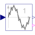

TotalHarmonicDistortionOutput the total harmonic distortion (THD) |

|
Diagram
{kind=link}
Information
This information is part of the Modelica Standard Library maintained by the Modelica Association.
This block determines the total harmonic distortion (THD) over the given period 1/f.
Consider that the input u consists of harmonic RMS components
U1, U2, U3, etc.
The total RMS component is then determined by:

The calculation of the total harmonic distortion is based on the parameter useFirstHarmonic.
The default value useFirstHarmonic = true represents the standard THD calculation used in
electrical engineering.
The non-default value useFirstHarmonic = false
calculates the THD typically used for the assessment of audio signals.
If useFirstHarmonic = true, the total higher harmonic content (harmonic order numbers > 1)
refers to the RMS value of the fundamental wave:

If useFirstHarmonic = false, the total higher harmonic content (harmonic order numbers > 1)
refers to the total RMS:

In case of a zero input signal or within the first period of calculation, the boolean output signal
valid becomes false to indicate that the calculation result is not valid. Valid
calculations are indicated by valid = true.
Parameters (2)
| f |
Value: Type: Frequency (Hz) Description: Base frequency |
|---|---|
| useFirstHarmonic |
Value: true Type: Boolean Description: THD with respect to first harmonic, if true; otherwise with respect to total RMS |
Connectors (3)
| u |
Type: RealInput Description: Connector of Real input signal |
|
|---|---|---|
| y |
Type: RealOutput Description: Connector of Real output signal |
|
| valid |
Type: BooleanOutput Description: True, if output y is valid |
Components (9)
| harmonic |
Type: Harmonic |
|
|---|---|---|
| rootMeanSquare |
Type: RootMeanSquare |
|
| greaterThreshold |
Type: GreaterThreshold |
|
| division |
Type: Division |
|
| limiter |
Type: Limiter |
|
| pythagoras |
Type: Pythagoras |
|
| andValid |
Type: And |
|
| booleanExpression |
Type: BooleanExpression |
|
| switch1 |
Type: Switch |
Used in Examples (1)
|
Modelica.Blocks.Examples Calculation of total harmonic distortion of voltage |